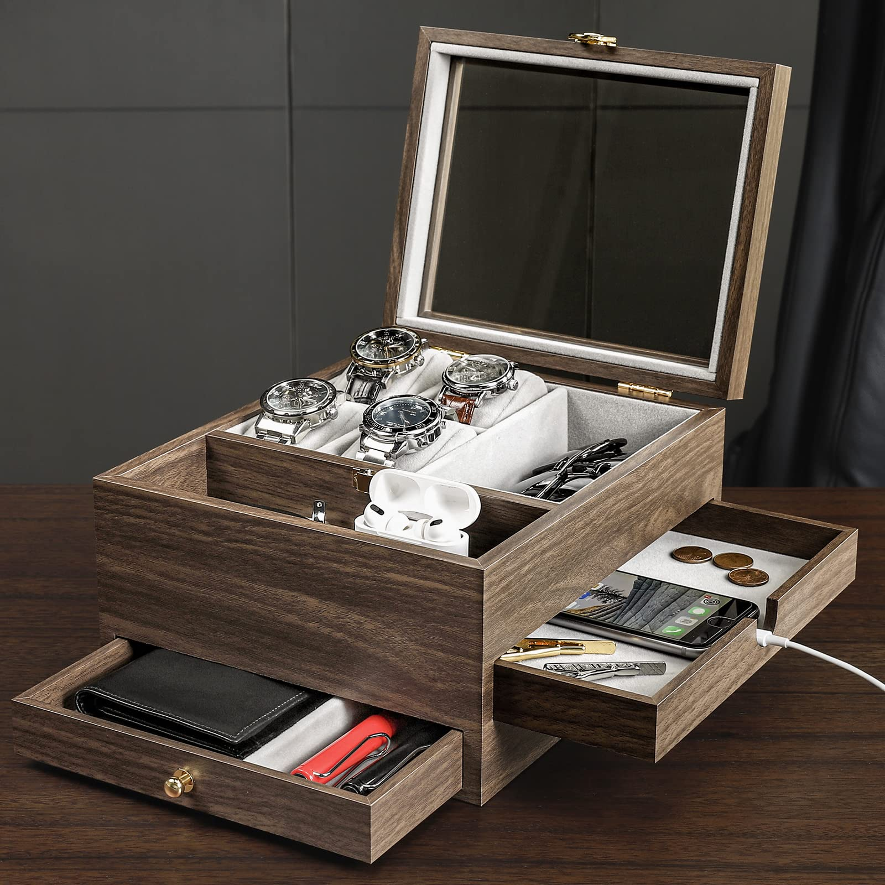

Titan Maritime Chronograph 1830KL01
Review by Dev Shah | Published: April 7, 2025

Nautical Elegance Meets Practical Design
★★★★☆
Price: $180
The Titan Maritime Chronograph 1830KL01 delivers a compelling blend of nautical-inspired design and practical functionality that punches well above its price point...
Nighttime legibility exceeds expectations thanks to the generously applied luminous material on the hands and hour markers...
Pros
- Elegant nautical design with distinctive indices
- Excellent lume performance
- Precise Japanese quartz movement
- Comfortable 42mm case size
- Quality leather strap develops nice patina
Cons
- Chronograph seconds hand occasionally misaligns
- Crown doesn't screw down for extra water protection
- Limited 50m water resistance
- Leather strap requires break-in period
Priced at approximately $180, the Titan Maritime 1830KL01 represents exceptional value for a chronograph with such thoughtful design...
View Product Details
Homde Wooden Watch Box Organizer
Review by Dev Shah | Published: April 7, 2025

Elegant Storage with Multi-Functional Design
★★★★☆
Price: $45
The Homde Wooden Watch Box Organizer offers an attractive and practical storage solution for watch enthusiasts...
- Top Layer: Features four dedicated watch pillows plus two compartments for daily items.
- Middle Drawer: Large drawer with a charging hole—perfect for phones or accessories.
- Bottom Drawer: Two partitions to store notebooks, wallets, or larger items.
Pros
- Attractive wood grain finish
- Multi-functional three-layer design
- Practical charging hole for smartphones
- Glass display lid showcases collection
- Soft protective interior lining
Cons
- Likely veneer, not solid hardwood
- Watch pillows are slightly undersized
- Middle drawer sticks slightly
- Visible corner joint quality
Priced at $45, the Homde box balances display-worthy looks and practical functionality, making it a thoughtful gift or personal accessory hub...
Check Price on Amazon